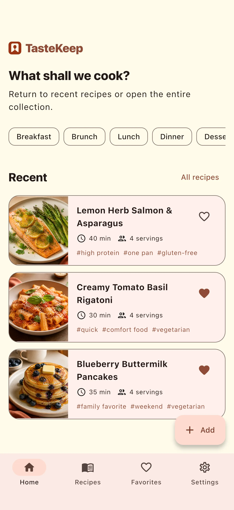
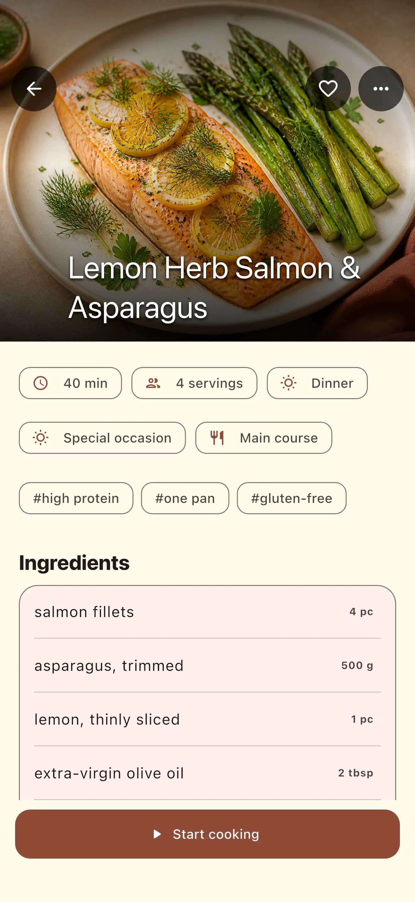

Find anything fast.
Search your full collection, filter it, mark favorites, and return to recently used recipes without digging through notes.
Your private recipe notebook
Bring family recipes, cookbook discoveries, and dishes found online into one calm, searchable collection.


Keep the recipes.
Lose the clutter.
Made for real kitchens
Save only a title when you are in a hurry, or build a complete recipe with photos, ingredients, steps, tags, timing, and servings.
Search your full collection, filter it, mark favorites, and return to recently used recipes without digging through notes.
Open cooking mode for large, readable instructions and keep a separate photo with each step when visuals help.
Create a backup of your collection and restore it when needed. Your recipes remain yours to keep and move.
Private by design
TasteKeep stores recipes on your device. The current version has no advertising, third-party analytics, or cloud service sending your collection to the developer.
Read the privacy policyLaunching soon on iPhone and Android.